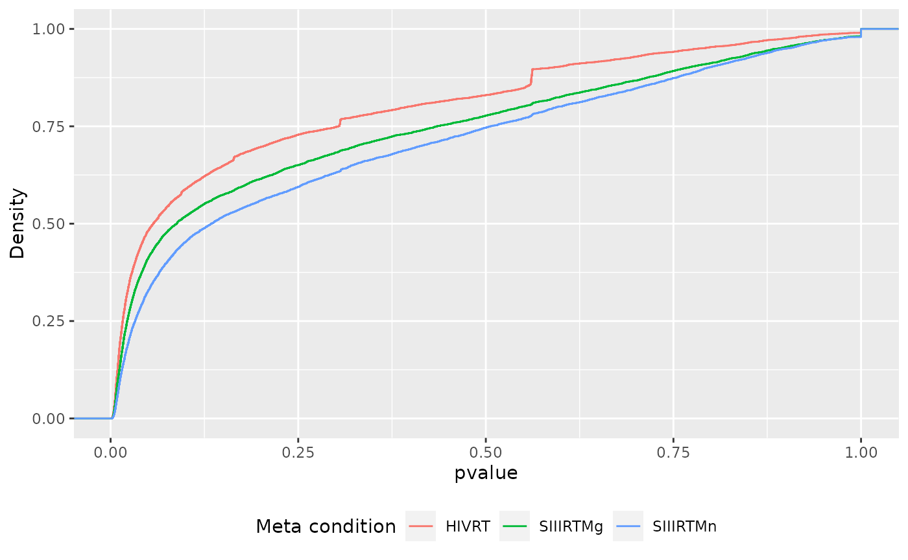
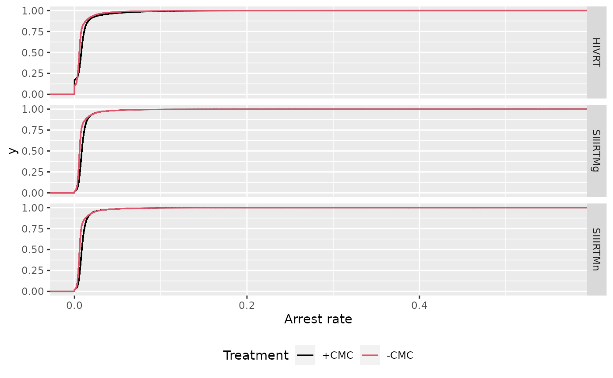
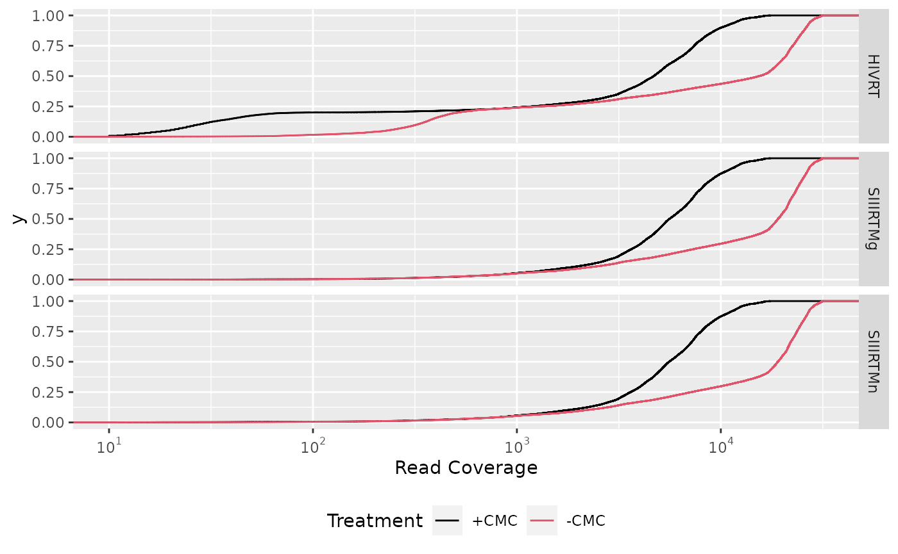
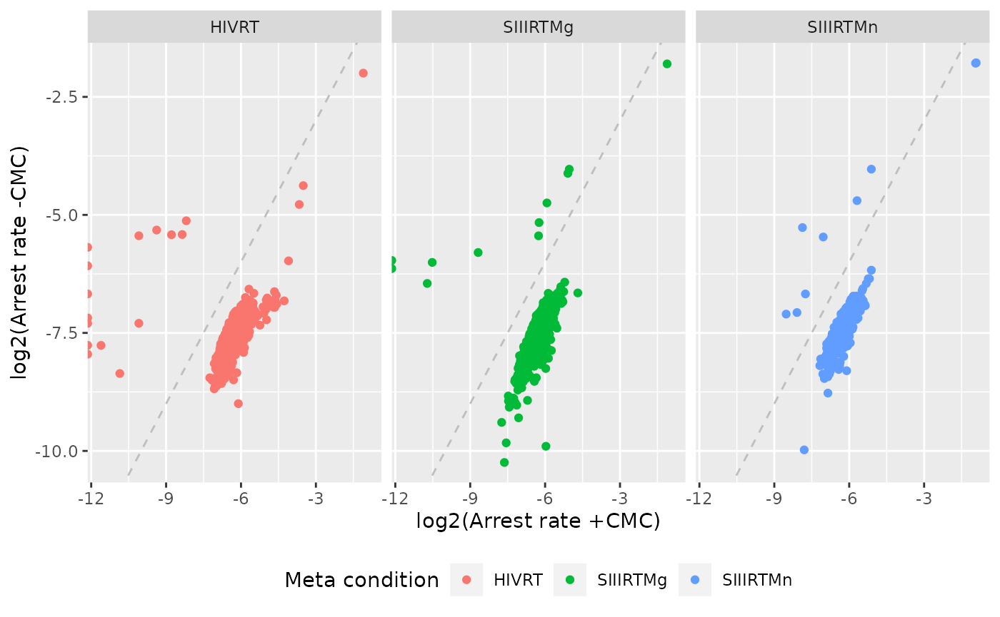

JACUSA2helper meta conditions
Michael Piechotta
2021-07-13
Source:vignettes/JACUSA2helper-meta-condtions.Rmd
JACUSA2helper-meta-condtions.RmdSee vignette("JACUSA2helper") for general description of analysis with JACUSA2helper. For details on JACUSA2, check the JACUSA2 manual.
In the following, the use of meta conditions to combine multiple pairwise comparisons will be shown.
Meta condition
JACUSA2helper supports the analysis of several related JACUSA2 result files via results <- read_results(files, meta_conds) where meta_conds is a vector of strings that provides a descriptive name for each file in the vector of strings files.
Here, we will use the the Zhou et al. (2018) data set, where the authors map RNA modification of pseudouridine (\(\Psi\)) by chemically modifying pseudouridines with carbodiimide (+CMC) and detecting arrest events that are induced by reverse transcription stops in high-throughput sequencing under 3 different conditions (HIVRT, SIIIMn, and SIIIMg). All three data sets are available in JACUSA2helper via data(). Additionally, we have compiled combined data sets data(Zhou2018_call2) and data(Zhou2018_rt_arrest) that utilizes meta conditions. Note, that this data has NO replicates!
data(Zhou2018_rt_arrest)
unique(Zhou2018_rt_arrest$meta_cond)
#> [1] HIVRT SIIIRTMn SIIIRTMg
#> Levels: HIVRT SIIIRTMg SIIIRTMnGroup By Site (and other)
When manipulating a multi results object created by read_results(), it is crucial to distinguish the following files in an analysis pipeline:
results %>% ... other functions()results %>% dplyr:group_by(results, meta_cond) %>% ... other functions()
The first statement will apply any subsequent functions to ALL sites regardless of the meta condition while the last statement will apply to sites of EACH meta condition!
Number of sites
The following statement will determine the number of covered sites per contig and meta condition:
dplyr::distinct(Zhou2018_rt_arrest, contig, start, end, strand, meta_cond) %>%
dplyr::group_by(contig, meta_cond) %>%
dplyr::count()
#> # A tibble: 9 x 3
#> # Groups: contig, meta_cond [9]
#> contig meta_cond n
#> <chr> <fct> <int>
#> 1 18S HIVRT 3571
#> 2 18S SIIIRTMg 1867
#> 3 18S SIIIRTMn 1892
#> 4 28S HIVRT 8291
#> # … with 5 more rowsThis statement will determine the number of covered sites per contig regardless of the meta condition:
Filter
Filter by coverage regardless of the meta condition.
filtered_all <- Zhou2018_rt_arrest %>%
dplyr::filter(All(cov$cond1 >= 100) & All(cov$cond2 >= 1000)) %>%
dplyr::group_by(contig, meta_cond) %>%
dplyr::count() # count in a group
filtered_all
#> # A tibble: 9 x 3
#> # Groups: contig, meta_cond [9]
#> contig meta_cond n
#> <chr> <fct> <int>
#> 1 18S HIVRT 1868
#> 2 18S SIIIRTMg 1865
#> 3 18S SIIIRTMn 1868
#> 4 28S HIVRT 4675
#> # … with 5 more rowsPlot
First, we add a description data_desc of the conditions to the result object. The data sets of Zhou2018 have been layout out in such a way that condition 1 and 2 correspond to carbodiimide (+CMC) treatment and control (-CMC), respectively.
result <- gather_repl(Zhou2018_rt_arrest$id, Zhou2018_rt_arrest$arrest_rate) %>%
dplyr::inner_join(Zhou2018_rt_arrest %>% dplyr::select(id, pvalue, meta_cond), by = "id") %>%
dplyr::mutate(
data_desc = dplyr::case_when(
cond == "cond1" ~ "+CMC",
cond == "cond2" ~ "-CMC",
)
)
# grouping enables nice legends in plot
group <- do.call(interaction, result[c("cond", "repl")])
result$group <- group
# relate group={cond(ition), repl(icat)}, and nice label
meta_desc <- dplyr::distinct(result, cond, repl, group, data_desc)
# map group values to nice labels (data_desc)
limits <- as.vector(meta_desc[["group"]])
labels <- meta_desc[["data_desc"]]Next, we define a ggplot2 object that allows to merge legend for different scales. Check combine legends for details. In brief, we use colour to represent cond(ition) and linetype to represent repl(icate) an relate their possible combinations to descriptive labels.
colour_scale <- ggplot2::scale_colour_manual(
name = "Treatment",
labels = labels,
limits = limits,
values = factor(meta_desc[["cond"]]) %>% as.integer()
)
linetype_scale <- ggplot2::scale_linetype_manual(
name = "Treatment",
labels = labels,
limits = limits,
values = factor(meta_desc[["repl"]]) %>% as.integer()
)Pvalue distribution
Plot of the empirical cumulative distributions of pvalues for all meta conditions.
result %>%
ggplot2::ggplot(ggplot2::aes(x = pvalue, colour = meta_cond)) +
ggplot2::labs(colour = "Meta condition") +
ggplot2::ylab("Density") +
ggplot2::stat_ecdf(geom = "step") +
ggplot2::xlab("pvalue") +
ggplot2::theme(legend.position = "bottom") 
Empirical cumulative arrest rate distribution
result %>%
ggplot2::ggplot(ggplot2::aes(x = value, colour = group, linetype = group)) +
ggplot2::stat_ecdf(geom = "step") +
colour_scale +
linetype_scale +
ggplot2::xlab("Density") +
ggplot2::xlab("Arrest rate") +
ggplot2::theme(legend.position = "bottom") +
ggplot2::facet_grid(meta_cond ~ .)
Compare coverage
gather_repl(Zhou2018_rt_arrest$id, Zhou2018_rt_arrest$cov) %>%
dplyr::inner_join(dplyr::select(Zhou2018_rt_arrest, id, meta_cond), by = "id") %>%
dplyr::mutate(
data_desc = dplyr::case_when(
cond == "cond1" ~ "+CMC",
cond == "cond2" ~ "-CMC",
)
) %>%
ggplot2::ggplot(ggplot2::aes(x = value, colour = group, linetype = group)) +
ggplot2::stat_ecdf(geom = "step") +
colour_scale +
linetype_scale +
ggplot2::scale_x_log10(
breaks = scales::trans_breaks("log10", function(x) 10^x),
labels = scales::trans_format("log10", scales::math_format(10^.x))
) +
ggplot2::xlab("Read Coverage") +
ggplot2::theme(legend.position = "bottom") +
ggplot2::facet_grid(meta_cond ~ .)
Compare arrest rate
Volcano plot of different library types (ignoring 0 arrest rate sites):
Zhou2018_rt_arrest %>%
dplyr::filter(strand == "+") %>%
ggplot2::ggplot(
ggplot2::aes(
x = log2((arrest_rate$cond1$rep1) / (arrest_rate$cond2$rep1)),
y = -log10(pvalue),
colour = meta_cond
)
) +
ggplot2::geom_point() +
ggplot2::geom_hline(yintercept = 2, linetype = 3, colour = "red") +
ggplot2::ylab("-log10(pvalue)") +
ggplot2::xlab("log2(arrest rate +GMC / -GMC)") +
ggplot2::facet_grid(. ~ meta_cond)
#> Warning: Removed 323 rows containing missing values (geom_point). We deduce that
We deduce that p <= 0.01 is a sensible cutoff. We plot the arrest rate for all three meta conditions and +CMC and -CMC treatment.
Zhou2018_rt_arrest %>%
dplyr::filter(strand == "+") %>%
dplyr::filter(pvalue <= 0.01) %>%
dplyr::group_by(meta_cond) %>%
ggplot2::ggplot(ggplot2::aes(x = log2(arrest_rate$cond1$rep1), y = log2(arrest_rate$cond2$rep1), colour = meta_cond)) +
ggplot2::geom_point() +
ggplot2::ylab("log2(Arrest rate -CMC)") +
ggplot2::xlab("log2(Arrest rate +CMC)") +
ggplot2::facet_grid(. ~ meta_cond) +
ggplot2::geom_abline(linetype = "dashed", colour = "gray") +
ggplot2::labs(colour = "Meta condition") +
ggplot2::theme(legend.position = "bottom")
We plot the arrest rate delta of +CMC and -CMC treatment for all three meta conditions and add Pseudouridine sites (black points).
data(rnam)
retain_rrna <- "18S"
filtered_rnam <- rnam %>%
dplyr::filter(rrna == retain_rrna, base == "psU")
Zhou2018_rt_arrest %>%
dplyr::filter(contig == retain_rrna) %>%
dplyr::filter(strand == "+") %>%
dplyr::filter(pvalue <= 0.01) %>%
dplyr::group_by(meta_cond) %>%
dplyr::mutate(arrest_rate_delta = arrest_rate$cond1$rep1 - arrest_rate$cond2$rep1) %>%
ggplot2::ggplot(ggplot2::aes(x = end, y = arrest_rate_delta, fill = meta_cond)) +
ggplot2::geom_bar(stat = "identity") +
ggplot2::geom_point(data = filtered_rnam, ggplot2::aes(x = pos, y = 0), fill = "black") +
ggplot2::xlab(paste0("Position on ", retain_rrna)) +
ggplot2::ylab("Arrest rate (+CMC - -CMC)") +
ggplot2::ylim(c(-0.1, 0.1)) +
ggplot2::theme(legend.position = "bottom") +
ggplot2::labs(fill = "Meta condition")
#> Warning: Removed 3 rows containing missing values (position_stack).
References
Zhou, Katherine I., Wesley C. Clark, David W. Pan, Matthew J. Eckwahl, Qing Dai, and Tao Pan. 2018. “Pseudouridines Have Context-Dependent Mutation and Stop Rates in High-Throughput Sequencing.” RNA Biology 15 (7): 892–900. https://doi.org/10.1080/15476286.2018.1462654.